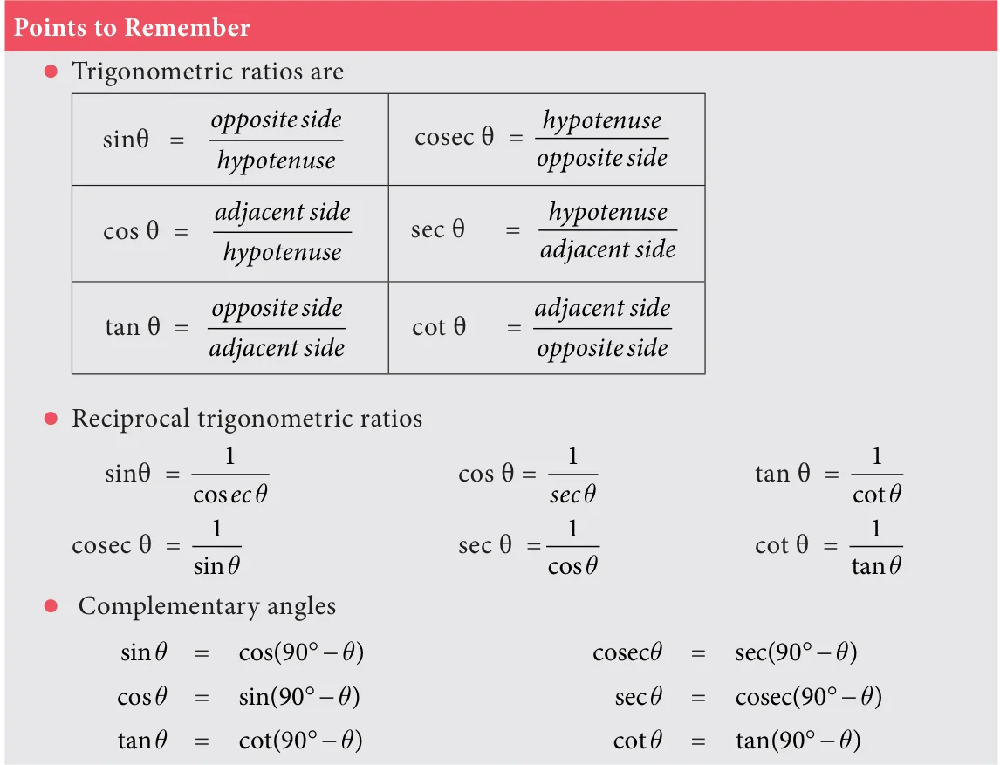

- If 2sin2q \(= 3\) , then the value of q is \((1) 90 ^{\circ} (2) 30 ^{\circ} (3) 45 ^{\circ} (4) 60 ^{\circ}\)
- The value of 3sin70 sec20 2sin49 sec51 is (1) 2 (2) 3 (3) 5 (4) 6
- The value of \(\frac{1tan45}{1tan245}\) is
\((1) 2 (2) 1 (3) 0 (4) \frac{1}{2}\)
- The value of cosec(70 q) sec(20 q) tan(65 q) cot(25 q) is (1) 0 (2) 1 (3) 2 (4) 3
- The value of tan1 \(^{\circ}\) tan2 \(^{\circ}\) tan3 \(^{\circ}\) ...tan89 \(^{\circ}\) is (1) 0 (2) 1 (3) 2 (4) 3 2
- Given that sina \(= \frac{1}{2}\) and cosb \(= 12\) , then the value of α + β is
\((1) 0 ^{\circ} (2) 90 ^{\circ} (3) 30 ^{\circ} (4) 60 ^{\circ}\)
